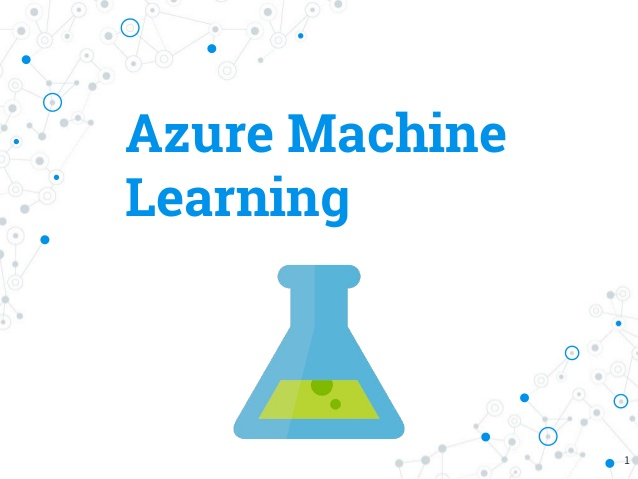
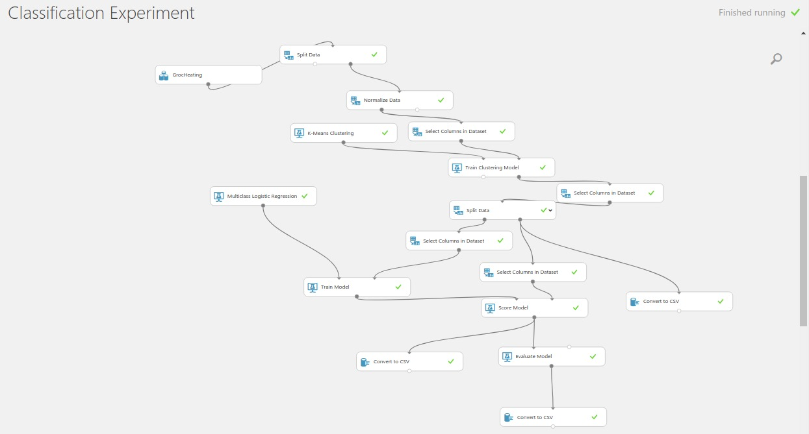

Azure Machine Learning studio provides an interactive canvas that
allows developing, running, testing and iterating an experiment
representing a predictive analysis model. Building and comparing
different machine learning models is effective and rapid. This
includes inputting and manipulating data, training model using ML
algorithms, scoring the model, evaluating the results and outputting
final values.
Once satisfied with experiment it is possible to deploy it as a Web
Service so that you can send the model new data using REST (Machine
Learning Web Service) API and receive back the results. You can call
the web services from various programming languages and platforms,
such as .NET and Java, and form applications, such as Excel.
REST API can be used for dashboard monitoring, usage throttling and
defining user access. Azure ML-studio has two types of web services:
1. Request-Response Service
- Scores single data record
2.Batch Execution Service
- Scores batch of data records
- Reads block of records from sources such as Azure Blop storage,
Azure SQL database, HTTP sources.
→ automating data processing

We used classification together with clustering to get categorical
values for the data points. Once we had labeled the data we used a
Multiclass-classification algorithm to create a predictive model,
which can be used to predict new data points classes.
The idea behind clustering the data is that we want to turn our
unlabeled data into labeled in such a way that we have groups which
behave normally and groups which behave abnormally → Making it
possible to distinguish between regular and irregular data. Therefore
we can detect data points which might be e.g. measurement errors or
device malfunctions. System that alerts when data is predicted as
certain group → immediate response when something in the data looks
abnormal → reacting to device malfunctions etc. becomes much faster.
Example of our experiment:
